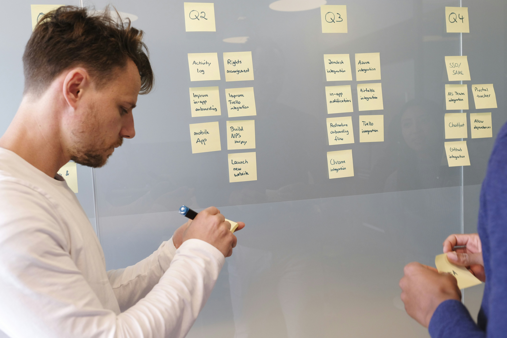
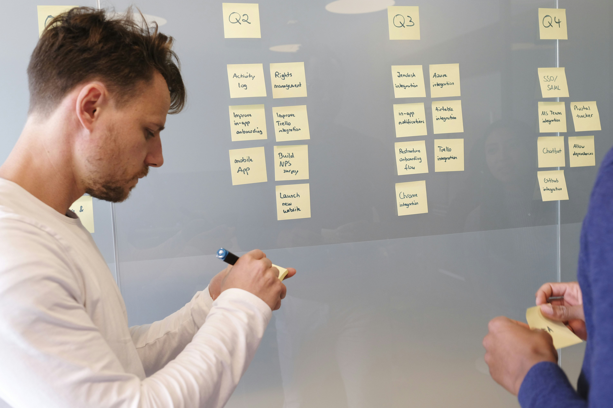
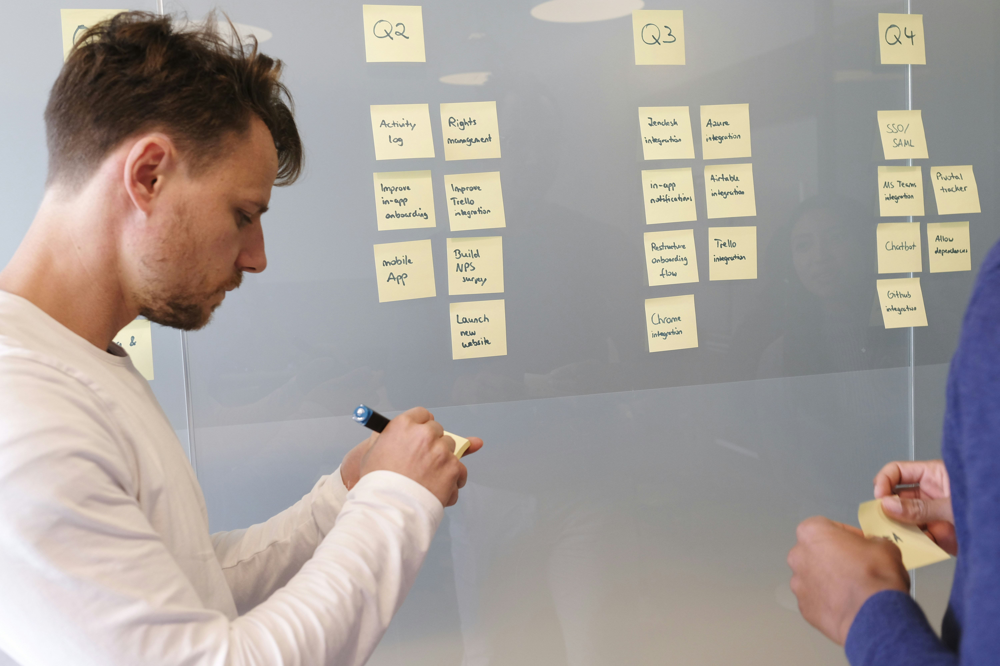

Início
Notícias
Nossa História
Contato
Documentação
Horários
Regimento Comum das Etecs
Calendário Anual
Gestão de Projetos
Sobre o curso de Gestão de Projetos da Etec

Matéria Unica
Planejamento e Gestão de Projetos
 
